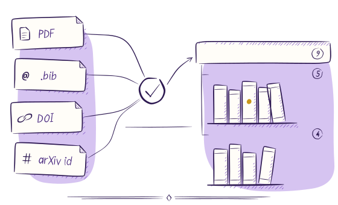
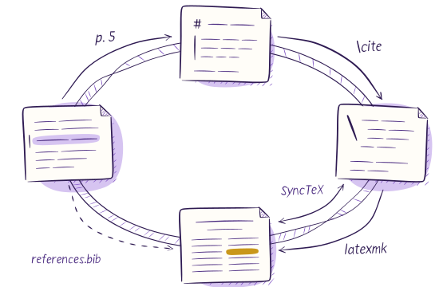

01 · 收集
把手头整堆论文都带进来
拖入 PDF、文件夹或 .bib 文件，也可以粘贴 arXiv ID、DOI 和链接；重复的条目会被标出。
- 按研究方向、标签和阅读状态整理
- 全文搜索 PDF、笔记和要点（支持中文）
- ⌘K / Ctrl+K「前往任何地方」；用 Crossref、DBLP 等核实发表出处

重复会被标出 研究方向 子方向 子方向演示
一段带讲解的完整演示：找论文、阅读、记笔记、探索相关工作，再到写 LaTeX。有英文版（9 分钟）和中文版（11 分钟）。
字幕已嵌入画面，无需另外开启。 录制自真实运行的应用，界面为对应语言。
功能
文献库、PDF 阅读、笔记与 LaTeX 在同一个工作区里，按研究的四个步骤排列。
01 · 收集
拖入 PDF、文件夹或 .bib 文件，也可以粘贴 arXiv ID、DOI 和链接；重复的条目会被标出。

重复会被标出 研究方向 子方向 子方向02 · 阅读
要点是撑起整篇论文的那些句子，每条都链接到 PDF 对应页。
03 · 关联
发展脉络展示一个研究方向所依托的前人工作，以及你的论文如何引用它们。
04 · 写作
\cite，再到 PDF从文献库引用，latexmk 在你的电脑上编译出实时 PDF 预览。

PDF 笔记 .md main.tex PDF 预览十八个界面，点任意一张可以放大，用左右方向键翻看。
截图使用作者文献库的演示副本。
继续阅读、今日待复习的题目和阅读统计，都在同一个首页上。
类别可嵌套成研究方向，按阅读状态一键筛选，可按标题、作者或标签搜索。
PDF 与 Markdown 笔记并排显示，支持提示框、公式、插图，也能直接在 PDF 上高亮。
自动摘出论文的关键句，每条都能跳到 PDF 对应页，并可写下自己的批注。
根据 PDF 版面找出图和表，无需 AI；点一下即可插入笔记。
Claude 把论文画成流程图，鼠标指向任意方框即可看到解释和页码。
练习题会解释每个选项为什么对、为什么错；答过的题会按计划回来复习。
脉络视图展示一个研究方向所依托的前人工作，以及你的论文如何引用它们，数据来自 OpenAlex 和 Semantic Scholar。
选几篇论文、写好列名，让 Claude 填一张对比表，或者向它们一起提一个问题。
不离开编辑器即可从文献库插入引用，本地编译，源码旁边就是 PDF 预览。
每个文件都有保存和自动保存的版本，可逐行对比差异并恢复。
八个章节带你走一遍整个应用，直接在界面上指出每个按钮的位置。
按 ⌘K（Windows 和 Linux 上为 Ctrl+K）即可查找任意论文、视图或操作，并显示对应的快捷键。
整个界面可在英文和简体中文之间切换，论文标题和原文保持原语言。
深色主题适合夜间阅读，PDF 依然保持白纸显示。
可选的神经网络语音在你的电脑上运行，朗读选中的文字、整篇论文或笔记，支持中文和英文。
AI 面板的「历史」按钮列出这篇论文之前的对话，以及其他论文的对话。
按 A4 或 Letter 排版，四周留一英寸页边距，过宽的表格、公式和图会缩到页面以内。
本地优先
没有账号，没有云端。下面简要说明什么留在本地、什么会联网。
PDF、笔记、高亮、要点和 LaTeX 项目都在一个普通文件夹里。服务器只监听 127.0.0.1，拒绝 Host 或 Origin 不是本机地址的请求。
只有在你使用需要联网的功能时才会查询，而且只发送论文的 ID、DOI、链接或标题。Overleaf 同步（如果你使用）通过你自己的 git 连接 git.overleaf.com。会访问的每个主机都列在文档里。
ResearchTool 不直接调用任何 AI API，也不保存 API key 或密码。你的命令行工具发给服务商的内容，受你自己在该服务的账号条款约束。设置好命令行工具后，新导入论文的自动归类默认在后台运行，可以关闭。
开始使用
服务器只用 Node 标准库，浏览器端的库也已打包，所以不需要 npm install，也不需要构建。可在 macOS、Linux（Ubuntu）和 Windows 10 / 11 上运行，命令都一样。
git clone https://github.com/purple-ginseng/ResearchTool.gitcd ResearchToolnode server.js数据存放在 ./workspace（首次启动时创建）。
概览页上的「开始导览」或帮助 › 开始导览，几分钟熟悉整个应用。
127.0.0.1 上运行开源 · MIT 许可
ResearchTool 免费且开源。随意使用、修改、分享；如果有什么能让你的研究更顺手，欢迎告诉我。
git clone https://github.com/purple-ginseng/ResearchTool.git
 每次推送到 main 和每个 Pull Request 都会在 macOS、Ubuntu 和 Windows 上跑测试。
每次推送到 main 和每个 Pull Request 都会在 macOS、Ubuntu 和 Windows 上跑测试。